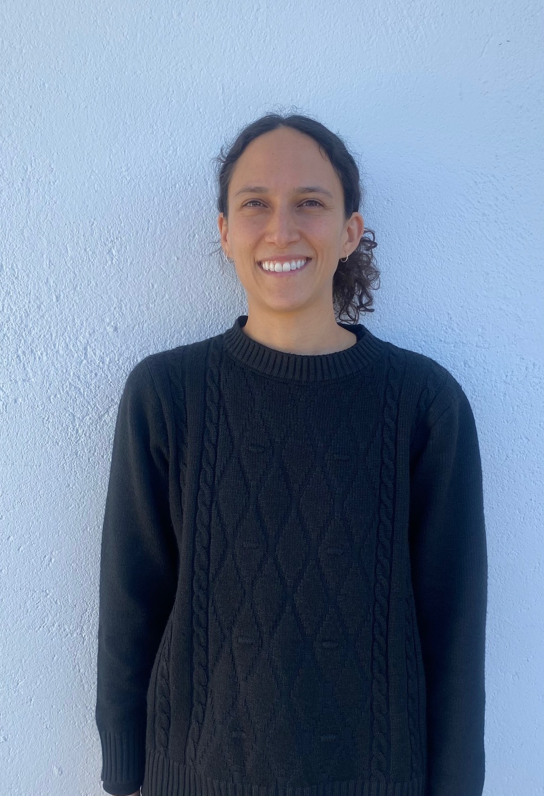

<main>
    <content>
        <div class="head">
            

            <div class="texto">
                <p class="titulo">Conoce al equipo detrás de <span class="beat">BeatCraft</span></p>
                <br>
                <p class="info">Somos dos estudiantes de programación apasionados por la música y la tecnología. 
                    Al ver lo complicado que era gestionar canciones y crear sets personalizados, 
                    decidimos unir nuestras habilidades para diseñar una herramienta intuitiva y 
                    poderosa para DJs.</p>
            </div> 

        </div>

        <div class="perfil">

            <div class="perfil1">

                <div class="info1">
                    <p class="sobre">Sobre <span class="nombre">Eugenio</span></p>
                    <br>
                    <p>Profesional en Administración de Sistemas Informáticos en Red (ASIR) con una fuerte pasión por la tecnología y la innovación. Actualmente, me enfoco en el desarrollo de aplicaciones, explorando nuevas herramientas y lenguajes para crear proyectos funcionales y creativos.</p>
                    <br>
                    <p>Rol: desarrollador Full-Stack</p>
                    <br>
                    <a href="https://github.com/e-nihilus"></a>
                    <br><br>
                    <a href="https://www.linkedin.com/in/eugenio-pardo-rayo-6a30b7259/"></a>
                </div>

                <div class="imag">
                    
                </div>
            </div>

            <div class="perfil2">

                <div class="info2">
                    <p class="sobre">Sobre <span class="nombre">Catalina</span></p>
                    <br>
                    <p>Profesional en Psicología y Gestión Cultural, con experiencia en el diseño de cursos online de arte y música. Mi constante interés por aprender cosas nuevas me llevó al desarrollo web, ampliando mis habilidades para crear soluciones tecnológicas en el ámbito cultural y educativo.</p>
                    <br>
                    <p>Rol: desarrolladora Full-Stack</p>
                    <br>
                    <a href="https://github.com/cascodenotch"></a>
                    <br><br>
                    <a href="https://www.linkedin.com/in/catalina-arciniegas-saenz/"></a>
                </div>

                <div class="imag">
                    
                </div>

            </div>
        </div>
    </content>
</main>
